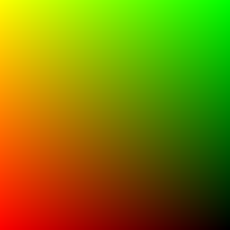
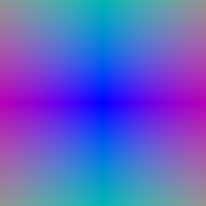
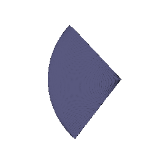

**CMSC848F-3D Vision**
**Project 3**
**Darshit Desai**
**Dir id: darshit; Email: darshit@umd.edu**
Differentiable Volume Rendering
===============================================================================
In the emission-absorption (EA) model described in class, volumes are typically described by their *appearance* (e.g. emission) and *geometry* (absorption) at *every point* in 3D space. For part 1 of the assignment, you will implement a ***Differentiable Renderer*** for EA volumes, which you will use in parts 2 and 3. Differentiable renderers are extremely useful for 3D learning problems --- one reason is because they allow you to optimize scene parameters (i.e. perform inverse rendering) from image supervision only!
Familiarize yourself with the code structure
-------------------------------------------------------------------------------
There are four major components of our differentiable volume rendering pipeline:
* ***The camera***: `pytorch3d.CameraBase`
* ***The scene***: `SDFVolume` in `implicit.py`
* ***The sampling routine***: `StratifiedSampler` in `sampler.py`
* ***The renderer***: `VolumeRenderer` in `renderer.py`
`StratifiedSampler` provides a method for sampling multiple points along a ray traveling through the scene (also known as *raymarching*). Together, a sampler and a renderer describe a rendering pipeline. Like traditional graphics pipelines, this rendering procedure is independent of the scene and camera.
The scene, sampler, and renderer are all packaged together under the `Model` class in `main.py`. In particular the `Model`'s forward method invokes a `VolumeRenderer` instance with a sampling strategy and volume as input.
Also, take a look at the `RayBundle` class in `ray_utils.py`, which provides a convenient wrapper around several inputs to the volume rendering procedure per ray.
Outline of tasks
-------------------------------------------------------------------------------
In order to perform rendering, you will implement the following routines:
1. **Ray sampling from cameras**: you will fill out methods in `ray_utils.py` to generate world space rays from a particular camera.
2. **Point sampling along rays**: you will fill out the `StratifiedSampler` class to generate sample points along each world space ray
3. **Rendering**: you will fill out the `VolumeRenderer` class to *evaluate* a volume function at each sample point along a ray, and aggregate these evaluations to perform rendering.
Ray sampling (10 points)
-------------------------------------------------------------------------------
Take a look at the `render_images` function in `main.py`. It loops through a set of cameras, generates rays for each pixel on a camera, and renders these rays using a `Model` instance.
### Visualization
You can run the code for part 1 with:
```bash
python main.py --config-name=box
```
Once you have implemented these methods, verify that your output matches the TA output by visualizing both `xy_grid` and `rays` with the `vis_grid` and `vis_rays` functions in the `render_images` function in `main.py`. **By default, the above command will crash and return an error**. However, it should reach your visualization code before it does.
**Answer-** These are my outputs after implementing `get_pixels_from_image` in `ray_utils.py` and `get_rays_from_pixels` in `ray_utils.py` given below:

My image output for xy grid

My image output for rays
TA's image output for xy grid
TA's image output for rays
Point sampling (10 points)
-------------------------------------------------------------------------------
### Visualization
Once you have done this, use the `render_points` method in `render_functions.py` in order to visualize the point samples from the first camera. They should look like this:
**Answer-** These are my outputs compared with TA outputs after implementing `StratifiedSampler` in `sampler.py` given below:
Note I modified the function call of rasterizer to explicity change the background to black,

My ray visualization
TA's ray visualization
Volume rendering (30 points)
-------------------------------------------------------------------------------
Finally, we can implement volume rendering! With the `configs/box.yaml` configuration, we provide you with an `SDFVolume` instance describing a box. You can check out the code for this function in `implicit.py`, which converts a signed distance function into a volume. If you want, you can even implement your own `SDFVolume` classes by creating new signed distance function class, and adding it to `sdf_dict` in `implicit.py`. Take a look at [this great web page](https://www.iquilezles.org/www/articles/distfunctions/distfunctions.htm) for formulas for some simple/complex SDFs.
You'll then use the following equation to render color along a ray:

where `σ` is density, `Δt` is the length of current ray segment, and `L_e` is color:

Compute the weights `T * (1 - exp(-σ * Δt))` in `VolumeRenderer._compute_weights`, and perform the summation in `VolumeRenderer._aggregate`. Note that for the first segment `T = 1`. (Hint: using torch.cumprod would be useful in computing the transmittance)
Use weights, and aggregation function to render *color* and *depth* (stored in `RayBundle.sample_lengths`).
### Visualization
By default, your results will be written out to `images/part_1.gif`. Provide a visualization of the depth in your write-up.
**Answer-**
My visualization for the 360 render of cube and the depth image is as given below:
Mesh status at 0 iterations
Mesh render status at 500 iterations
Reconstructing 3D from single view (85 points)
===============================================================================
Image to voxel grid (20 points)
-------------------------------------------------------------------------------
In this subsection, we will define a neural network to decode binary voxel grids.
Define the decoder network [here](https://github.com/848f-3DVision/assignment2/blob/main/model.py#L149) in `model.py` file, then reference your decoder [here](https://github.com/848f-3DVision/assignment2/blob/main/model.py#L182) in `model.py` file.
We have provided a [decoder network](https://github.com/848f-3DVision/assignment2/blob/main/model.py#L55-L129) in `model.py`, but you can also modify it as you wish.
Run the file `python train_model.py --type 'vox'`, to train single view to voxel grid pipeline, feel free to tune the hyperparameters as per your need.
After trained, visualize the input RGB, ground truth voxel grid and predicted voxel in `eval_model.py` file using:
`python eval_model.py --type 'vox' --load_checkpoint`
You need to add the respective visualization code in `eval_model.py`
On your webpage, you should include visuals of any three examples in the test set. For each example show the input RGB, render of the predicted 3D voxel grid and a render of the ground truth mesh.
**Answer-**
For this I tried training three different models:
* Implicit MLP Decoder which was provided with the source code
* A 3D up convolution decoder model, where I flatten the latent code given by the linear layer of the encoder and then upsampled the output using `Conv3D` upto 32x32x32
* A simple linear fully connected network, where I reshape the last layer to 32x32x32
An important point to note is that during training none of the models had any activations in the output layer, hence in the evaluation a sigmoid was added to clamp the output probability between 0.0 and 1.0
I chose the simple linear FC network since it was faster to train out of all three and had comparable results in visualization and F1 score with 3D up convolution network, The model is shown below:
```python
self.decoder = nn.Sequential(
nn.Linear(512, 1024),
nn.ReLU(),
nn.Linear(1024, 2048),
nn.ReLU(),
nn.Linear(2048, 32*32*32))
```
The results of the three examples for the linear network evaluation are shown below:
* Example 1:
Input Image to the Linear Network
Ground truth Voxel Representation
Ground truth Mesh Representation
Voxel Prediction Render Representation
* Example 2:
Input Image to the Linear Network
Ground truth Voxel Representation
Ground truth Mesh Representation
Voxel Prediction Render Representation
* Example 3:
Input Image to the Linear Network
Ground truth Voxel Representation
Ground truth Mesh Representation
Voxel Prediction Render Representation
Image to point cloud (20 points)
-------------------------------------------------------------------------------
In this subsection, we will define a neural network to decode point clouds.
Similar as above, define the decoder network [here](https://github.com/848f-3DVision/assignment2/blob/main/model.py#L155) in `model.py` file, then reference your decoder [here](https://github.com/848f-3DVision/assignment2/blob/main/model.py#L215) in `model.py` file
Run the file `python train_model.py --type 'point'`, to train single view to pointcloud pipeline, feel free to tune the hyperparameters as per your need.
After trained, visualize the input RGB, ground truth point cloud and predicted point cloud in `eval_model.py` file using:
`python eval_model.py --type 'point' --load_checkpoint`
You need to add the respective visualization code in `eval_model.py`.
On your webpage, you should include visuals of any three examples in the test set. For each example show the input RGB, render of the predicted 3D point cloud and a render of the ground truth mesh.
**Answer-**
For this representation I followed the model architecture given in the comments of the starter code, I tried modifying the same architecture iteratively by adding and removing layers and increasing the output layer size upto 4096 neurons. I also experimented with the number of points the visualization although gets denser. More of it is dicussed in the hyperparameters tuning section.
The architecture is given as below:
```python
self.decoder = torch.nn.Sequential(
nn.Linear(in_features=512, out_features=1024),
nn.ReLU(),
nn.Linear(in_features=1024, out_features=2048),
nn.ReLU(),
nn.Linear(in_features=2048, out_features=4096),
nn.ReLU(),
nn.Linear(in_features=4096, out_features=3*self.n_point),
nn.Tanh()
)
```
The results of the three examples for the linear network evaluation are shown below:
* Example 1:
Input Image to the Linear Network
Ground truth Point Cloud Representation
Ground truth Mesh Representation
Point Cloud Prediction Render Representation
* Example 2:
Input Image to the Linear Network
Ground truth Point Cloud Representation
Ground truth Mesh Representation
Point Cloud Prediction Render Representation
* Example 3:
Input Image to the Linear Network
Ground truth Point Cloud Representation
Ground truth Mesh Representation
Point Cloud Prediction Render Representation
Image to mesh (20 points)
-------------------------------------------------------------------------------
In this subsection, we will define a neural network to decode mesh.
Similar as above, define the decoder network [here](https://github.com/848f-3DVision/assignment2/blob/main/model.py#L177) in `model.py` file, then reference your decoder [here](https://github.com/848f-3DVision/assignment2/blob/main/model.py#L220) in `model.py` file
Run the file `python train_model.py --type 'mesh'`, to train single view to mesh pipeline, feel free to tune the hyperparameters as per your need. We also encourage the student to try different mesh initializations [here](https://github.com/848f-3DVision/assignment2/blob/main/model.py#L174)
After trained, visualize the input RGB, ground truth mesh and predicted mesh in `eval_model.py` file using:
`python eval_model.py --type 'mesh' --load_checkpoint`
You need to add the respective visualization code in `eval_model.py`.
On your webpage, you should include visuals of any three examples in the test set. For each example show the input RGB, render of the predicted mesh and a render of the ground truth mesh.
**Answer-**
For this representation I followed the model architecture given in the comments of the starter code, I tried modifying the same architecture iteratively by adding and removing layers. Note I also used a different w_smooth value for the mesh model, More of it in the hyperparameters tuning section.
The architecture is given as below, Note for this I used the w_smooth value as 0.5:
```python
self.decoder = torch.nn.Sequential(
nn.Linear(in_features=512, out_features=512),
nn.ReLU(),
nn.Linear(in_features=512, out_features=1024),
nn.ReLU(),
nn.Linear(in_features=1024, out_features=1024),
nn.ReLU(),
nn.Linear(in_features=1024, out_features=2048),
nn.ReLU(),
nn.Linear(in_features=2048, out_features=3*mesh_pred.verts_packed().shape[0]),
nn.Tanh()
)
```
The results of the three examples for the linear network evaluation are shown below:
* Example 1:
Input Image to the Linear Network
Ground truth Mesh Representation
Predicted Mesh Representation
* Example 2:
Input Image to the Linear Network
Ground truth Mesh Representation
Predicted Mesh Representation
* Example 3:
Input Image to the Linear Network
Ground truth Mesh Representation
Predicted Mesh Representation
Quantitative comparisions(10 points)
-------------------------------------------------------------------------------
Quantitatively compare the F1 score of 3D reconstruction for meshes vs pointcloud vs voxelgrids.
**Provide an intutive explaination justifying the comparision.**
For evaluating you can run:
`python eval_model.py --type voxel|mesh|point --load_checkpoint`
**Answer-**
The F1 score plots for the three models are as follows:
F1 @ 0.05(VOX) = 81.916%
F1 @ 0.05(POINT) = 96.126%
F1 @ 0.05(MESH) = 92.034%
**Intuitive Explaination-**
From the above plots Quantitatively it can be said that-
* Voxels have the lowest average F1 score among all three representations, This is primarily because the voxel is rendered from 32x32x32 volume and hence the resolution is very low, This is also evident from the visualization of the voxels during fit_data script where the voxels removed block wise based on probability and the resolution is pretty much dependent on the volume chosen by the user
* Point Clouds achieve near perfect scores because of the resolution as well as the primary property of the point clouds inherent property of not enforcing any connectivity between the points, Hence the point cloud can be easily fit to the ground truth mesh. This is because the point clouds not enforcing connectivity and being able to move freely in space.
* Mesh had an intermediate F1 score, because of the use of an inital ico_sphere topology which simply cannot model holes or complicated topologies, Hence the mesh representation is not able to achieve the same F1 score as the point cloud representation. Also it is difficult to interpret connectivity from single view images as well as the requirement of predicting holes which leads to improper predicitons.
In conclusion, it can be said that a more mean average topological mesh shape of a chair would help in better reconstruction of the chair in the mesh reconstruction, Also the point cloud representation is the best among the three representations. A more finer representation of voxel resolution might increase the score but it will come at a cost of increase in training times and also increase in rendering times.
Analyse effects of hyperparms variations (5 points)
-------------------------------------------------------------------------------
Analyse the results, by varying an hyperparameter of your choice.
For example `n_points` or `vox_size` or `w_chamfer` or `initial mesh(ico_sphere)` etc.
Try to be unique and conclusive in your analysis.
**Answer-**
The following hyperparameters in general were varied and incorporated into the models:
* Use of stepping down of Learning Rate to control fluctuations in the loss function. This was done by stepping down LR by 0.1 every 2000 iterations. Compared to a constant learning rate this achieved better results. Note results of this were displayed in the earlier sections.
* Use of gradient_clipping during training to avoid exploding gradients. This was done by using `torch.nn.utils.clip_grad_norm_` function. This was done for all the models.
* Another hyperparameter which was tuned was the batch_size which was increased from 2 to 16 for all iterations of the training, later for the last 2000 iterations the batch_size was kept 30 as it ensured better convergence. This was done for all the models.
* Finally the hyperparameters which affected the visualization were `n_points` for Point Clouds and `w_smooth` for Meshes. The results of the same are shown below:
* Point Clouds:
For point clouds the number of points were varied, the following results show their effect on the F1 score and the visualization. The increase in F1 score shows that more number of points are being sample for harder to infer surfaces and hence the F1 score increases. The visualization shows that the point cloud gets denser with increase in number of points. The results are shown below:
* F1 scores:
The following plots show the F1 score vs n_points for the point cloud representation. The F1 score was calculated using the `eval_model.py` script. The results are shown below:
For n_points = 5000; F1 @ 0.05(VOX) = 96.126%
For n_points = 10000; F1 @ 0.05(POINT) = 96.891%
For n_points = 25000; F1 @ 0.05(MESH) = 97.009%
* Visualization of results:
The visualization of the results with increasing number of points shows that with increase in number of points the representation gets denser but only at some locations, Another observation is that the points get noisier with increase in number of points, this indicates that a longer amount of training might be required for higher number of points, The results of two examples are shown below
* Example: 1
Input Image to the Linear Network
Ground truth Point Cloud Representation
Point Cloud Prediction Render Representation 5000 POINTS
Point Cloud Prediction Render Representation 10000 POINTS
Point Cloud Prediction Render Representation 25000 POINTS
* Example: 2
Input Image to the Linear Network
Ground truth Point Cloud Representation
Point Cloud Prediction Render Representation 5000 POINTS
Point Cloud Prediction Render Representation 10000 POINTS
Point Cloud Prediction Render Representation 25000 POINTS
* Meshes:
* F1 Scores:
The F1 scores for the mesh representation were calculated using the `eval_model.py` script. The results are shown below:
For w_smooth = 0.5; F1 @ 0.05(VOX) = 92.034%
For w_smooth = 5.0; F1 @ 0.05(POINT) = 66.825%
* Visualization of results:
The visualization of results show that w_smooth=5 leads to oversmoothening of the surfaces resulting in almost same surface predicitions for all the examples, This is because the w_smooth=5 leads to a very high penalty for the laplacian smoothing term and hence the surface is almost flat. Also, changing w_smooth to 5.0 did not provide better results as over smoothing leads to more misalignment with respect to ground truth mesh. This is also evident from the F1 scores. The results are shown below:
* Example: 1
Input Image to the Linear Network
Ground truth Mesh Representation
Mesh Prediction Render Representation with w_smooth=0.5
Mesh Prediction Render Representation with w_smooth=5
* Example: 2
Input Image to the Linear Network
Ground truth Mesh Representation
Mesh Prediction Render Representation with w_smooth=0.5
Mesh Prediction Render Representation with w_smooth=5
Interpret your model (10 points)
-------------------------------------------------------------------------------
Simply seeing final predictions and numerical evaluations is not always insightful. Can you create some visualizations that help highlight what your learned model does? Be creative and think of what visualizations would help you gain insights. There is no `right' answer - although reading some papers to get inspiration might give you ideas.
**Answer-**
In this section I wanted to check the generalization capability with the edge cases to further check whether the model is generalizing over chair objects or is it taking into account the background of the image as well, just to ensure whether the model is cheating or not, I used the following images for the same:
* White Image Results:
White Input Image to the Network
Rendered Voxel Prediction Representation for white image
Rendered Point Cloud Prediction Representation for white image
Rendered Mesh Prediction Representation for white image
* Black Image Results:
Black Input Image to the Network
Rendered Voxel Prediction Representation for black image
Rendered Point Cloud Prediction Representation for black image
Rendered Mesh Prediction Representation for black image
* Gaussian Image Results:
Gaussian Input Image to the Network
Rendered Voxel Prediction Representation for gaussian image
Rendered Point Cloud Prediction Representation for gaussian image
Rendered Mesh Prediction Representation for gaussian image
From the above results it can be fairly assumed that the network is clearly overfitting over the background for some cases of black images in point clouds, In case of white and gaussian image inputs, the output shows that the network is not able to distinguish between a white image without any chair and a gaussian noise image. This is a clear case of overfitting and it would be better to use a more complex representation of ground truth data while training to avoid this overfitting issue, Like chairs in various orientations and backgrounds and lighting conditions.
Another test, which could be done on the above used r2n2_shapenet_dataset would dataset augmentation where you give the chair images in various orientations, check the output of the forward pass done on the current model and if it doesn't match the ground truth (and most probably it will not) include those rotated images in the dataset.